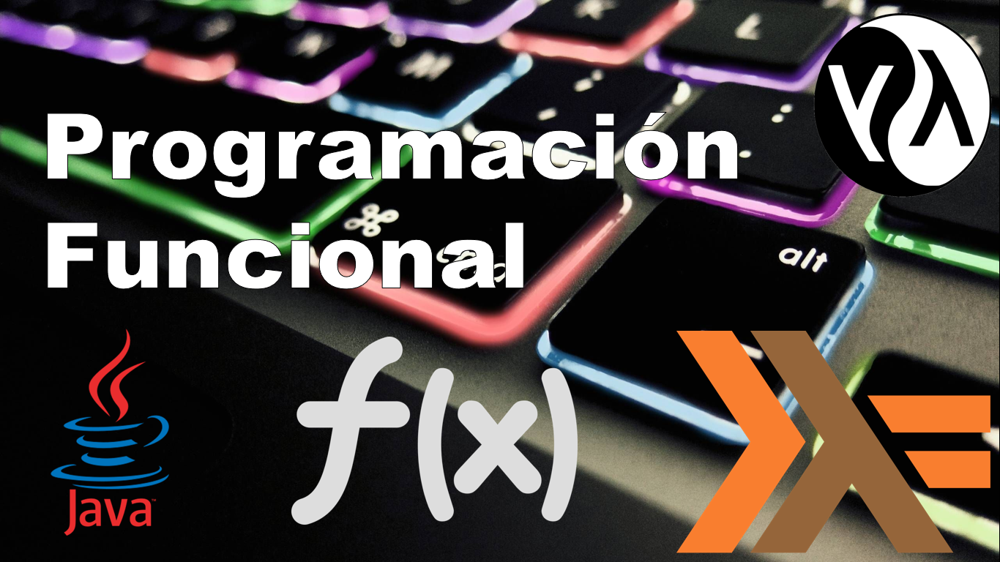
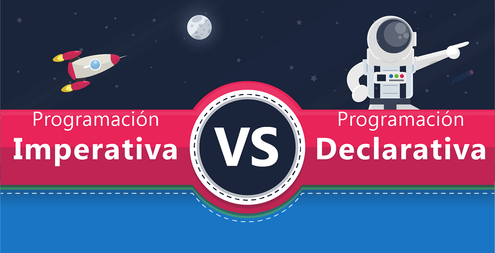

Introducción a la Programación Funcional
La programación funcional es un paradigma que se centra en el uso de funciones matemáticas, evitando el estado mutable y los efectos secundarios. Los programas funcionales son más fáciles de probar y depurar debido a su naturaleza inmutable, que previene comportamientos impredecibles.
Características Clave:
- Funciones Puras: Las funciones matemáticas puras no tienen efectos secundarios y siempre producen el mismo resultado para los mismos parámetros de entrada.
- Inmutabilidad: Se evita el cambio de estado y el uso de variables globales, optando por variables locales y funciones recursivas.
- Funciones de Orden Superior: Funciones como
map, filter, y reduce permiten manipular datos de manera concisa.
- Patrones de Diseño Funcional: Incluyen el patrón de función pura y el patrón de inmutabilidad para facilitar la comprensión y verificación del código.
- Programación Lógica y Teoremas: Se utilizan para demostrar propiedades del programa y asegurar su corrección.

Programación Declarativa vs Imperativa
La programación declarativa y la imperativa representan dos enfoques diferentes para escribir código. La programación declarativa se enfoca en el resultado que se desea alcanzar, especificando qué se debe hacer sin detallar el proceso. La programación imperativa, en cambio, se centra en el cómo hacer algo, describiendo los pasos necesarios para lograr el resultado.
Programación Declarativa
- Enfoque: Se centra en el qué hacer, sin preocuparse por el cómo se hace.
- Ejemplos: SQL, HTML, lenguajes funcionales.
- Ventajas: Código más conciso y legible, menos propenso a errores de implementación.
- Desventajas: Menos control sobre los detalles de la ejecución.
Programación Imperativa
- Enfoque: Se centra en el cómo hacer algo, describiendo cada paso del proceso.
- Ejemplos: C, Java, Python.
- Ventajas: Mayor control sobre la ejecución, adecuado para problemas donde el proceso es importante.
- Desventajas: Código más largo y complejo, mayor propensión a errores.
Comparación
- Enfoque: La programación declarativa se enfoca en qué se quiere lograr, mientras que la imperativa se enfoca en cómo lograrlo.
- Control: La programación imperativa ofrece más control sobre la ejecución, mientras que la declarativa simplifica el proceso.
- Legibilidad: La programación declarativa tiende a ser más concisa y legible, mientras que la imperativa puede ser más detallada y extensa.

Programación Funcional vs Programación Orientada a Objetos
La programación funcional y la programación orientada a objetos representan dos enfoques distintos para resolver problemas y estructurar el código. La programación funcional se enfoca en el uso de funciones puras y evita el estado mutable, mientras que la programación orientada a objetos organiza el código en torno a objetos que combinan datos y comportamientos.
Programación Funcional
- Funciones Puras: No tienen efectos secundarios y siempre producen el mismo resultado para las mismas entradas.
- Inmutabilidad: Los datos son inmutables y se crean nuevos datos en lugar de modificar los existentes.
- Funciones de Orden Superior: Permite el uso de funciones como argumentos o resultados de otras funciones.
Programación Orientada a Objetos
- Encapsulamiento: Agrupa datos y comportamientos en clases, ocultando la implementación.
- Herencia: Permite crear nuevas clases basadas en clases existentes.
- Polimorfismo: Permite que objetos de diferentes clases sean tratados de manera uniforme.
Comparación
- Estado: La programación funcional evita el estado mutable, mientras que la POO permite el estado mutable en los objetos.
- Reutilización: En POO se utiliza herencia y composición de objetos, mientras que en programación funcional se reutilizan funciones.
- Modularidad: La POO usa clases y objetos para modularizar el código, mientras que la programación funcional usa funciones y módulos.